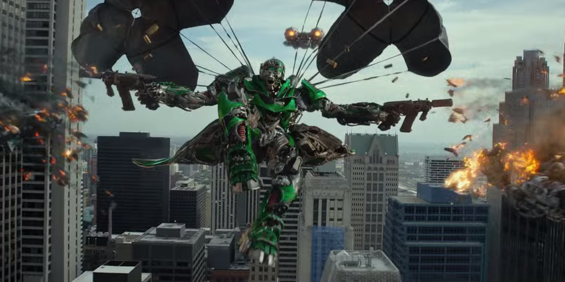
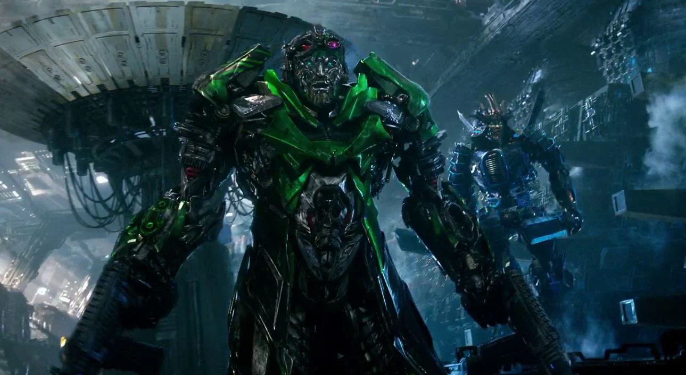

Khi mọi chuyện trở nên rắc rối, Crosshairs là mẫu người mà bạn muốn có trong đội của mình. Hoặc bạn sẽ làm thế, nếu thực tế là anh ấy không tự ái và hơi ngốc nghếch. Người lính nhảy dù Autobot này có một câu nói hay với thái độ không tốt và ít tôn trọng Optimus Prime , nuôi dưỡng mong muốn được tự mình làm chủ hoặc tự mình chịu trách nhiệm. Bất chấp những tệ nạn này, Crosshairs vẫn là một tay bắn cừ khôi, người luôn có thể chạy thục mạng và biến Decepticons thành thịt băm. Anh ta có sở trường là bắt kẻ thù của mình một cách bất ngờ, bằng cách lao xuống từ trên cao hoặc bằng một cú rút khẩu Sidearm Blasters nhanh như chớp. Là phát súng sắc bén nhất trên chiến trường, các đồng nghiệp của anh ấy biết rằng anh ấy sẽ luôn bắn trúng mục tiêu của mình. Và nếu con chip thực sự gặp khó khăn, cuối cùng anh ấy sẽ vượt qua vì các Autobot đồng nghiệp của mình.

Crosshairs là một trong số các Autobot đã ẩn náu trên Trái đất khi Harold Attinger 's Cemetery Wind bắt đầu săn lùng các Autobot. Crosshairs đã tham gia cùng với Drift , Hound và Bumblebee , và cả nhóm vẫn ẩn mình cho đến khi Optimus Prime quay lại với họ. Crosshairs bày tỏ niềm vui và niềm tin khi thủ lĩnh của họ trở lại, nói rằng anh ấy luôn tin rằng anh ấy sẽ làm được, nhưng vẫn càu nhàu về cách đối xử của các Autobot dưới bàn tay của con người. Crosshairs cùng với Hound lập tức tìm cách giết Cade Yeager , Tessa Yeager và Shane Dyson, nhưng Optimus đã ngăn anh ta lại, giải thích vai trò của họ trong việc giúp bảo vệ anh ta khỏi Attinger. Đêm đó, Crosshairs bày tỏ mong muốn tự mình tấn công sau khi Drift và Bumblebee bắt đầu chiến đấu, nhưng lại rơi vào tay Optimus khi mức độ nghiêm trọng của tình hình của họ bắt đầu chìm xuống. Crosshairs biết được số phận của Leadfoot và tham gia vào kế hoạch để Cade và Shane thâm nhập vào KSI.

Tuy nhiên, khi Cade phát hiện ra cái đầu đã ngừng hoạt động của Ratchet đang bị nấu chảy, Optimus đã tức giận tập hợp các Autobot lại hành động. Crosshairs vui vẻ tham gia bắn KSI, và chuẩn bị giết Joshua Joyce , nhưng sau một bài phát biểu mất tinh thần từ con người, Optimus đã ra lệnh rút lui. Các Autobot lên đường cùng với các đồng minh con người của họ, và bị truy đuổi bởi Galvatron và Stinger . Crosshairs vắng mặt trong trận chiến tiếp theo với Galvatron, nhưng Optimus và Tessa đã bị Lockdown bắt giữ .
Crosshairs rất vui khi rời khỏi Trái đất khi Optimus quyết định họ sẽ rời đi vĩnh viễn. Anh ta vẫn ở trên con tàu bị đánh cắp từ Lockdown cùng với Drift và Optimus, nhưng không may chuyến đi ngoài hành tinh của họ đã bị bắn hạ. Đâm vào một thung lũng gần đó, Crosshairs quyết định làm "kẻ dưới cơ" là đủ rồi và nói rằng con người xứng đáng với những gì sắp xảy đến với họ trước khi hỏi Optimus bước tiếp theo của họ là gì. Crosshairs vừa ngạc nhiên vừa khó chịu khi Optimus tuyển dụng sự trợ giúp của Dinobots , và rút lui sang bên lề trong khi Optimus đánh một số quyền vào Grimlock . Khi nhìn thấy chế độ khủng long khổng lồ của Grimlock, anh sợ hãi lùi lại. Dinobots đã tham gia với Autobots sau khi Optimus "ép buộc" Grimlock và Crosshairs gắn kết Scorn, mặc dù không phải không có thêm một vài lời càu nhàu về kỹ năng tạo động lực đặc biệt của Optimus. Crosshairs đã đối đầu với nhiều KSI Transformers cùng với Scorn, và sau đó họ đã giúp hộ tống Seed đến nơi an toàn. Sự can thiệp của Lockdown đã khiến mọi thứ đi chệch hướng, nhưng trận chiến đã chứng kiến các Autobot chiến thắng. Crosshairs chia tay Scorn, người mà anh ấy đặt biệt danh là "Spike" sau trận chiến, và nói với người bạn mới của mình rằng anh ấy sẽ đi cùng anh ấy bất cứ lúc nào. Khi Optimus tự mình khởi hành vào không gian, anh ấy đã ra lệnh cho Crosshairs và các Autobot còn lại khác bảo vệ Yeager khỏi bị tổn hại.